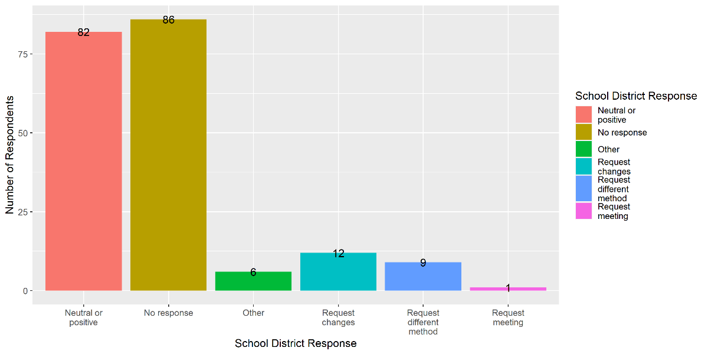
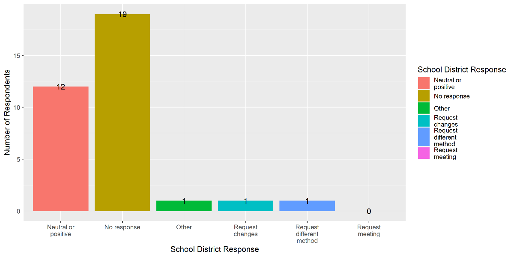
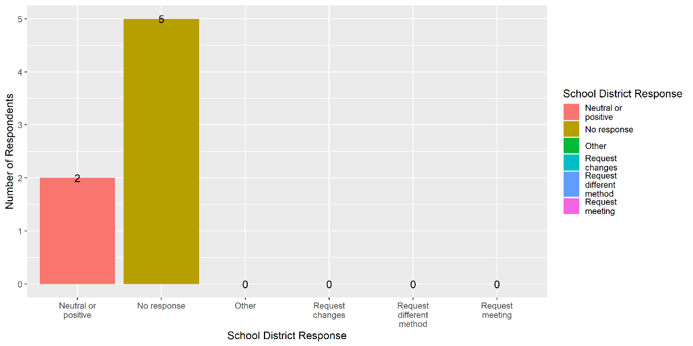

Survey Results: End-of-Year Evaluations
In July, AHEM sent out a survey asking you all about your end-of-year evaluations including what form of evaluation you chose and how your town responded. We are happy to say that the situation in Massachusetts seems to be little changed in this regard. Most homeschoolers choose to submit a progress report and receive neutral or positive feedback from their districts.
Altogether we received 270 responses. The vast majority, just over 80%, of respondents reported that they submitted a progress report as their end-of-year evaluation for the 2022-2023 school year.

When we asked about the prior year’s reporting, we found that those submitting progress reports sometimes receive requests for changes. Specifically, of 204 respondents who said that they had previously submitted a progress report, 31 respondents (15%) received some sort of request for follow-up or additional information.
Those submitting work samples only rarely received further requests.
While only a small number of respondents reported having submitted standardized tests scores as their method of evaluation, none of these reported receiving any additional requests.
Thank you to all who participated in this survey. Your responses help us to continue to track homeschool reporting trends in Massachusetts.